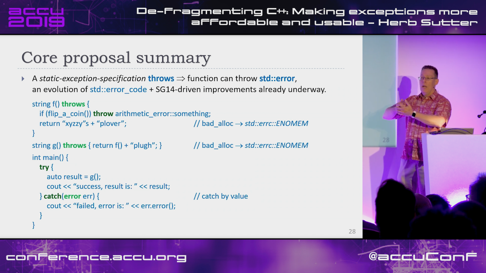
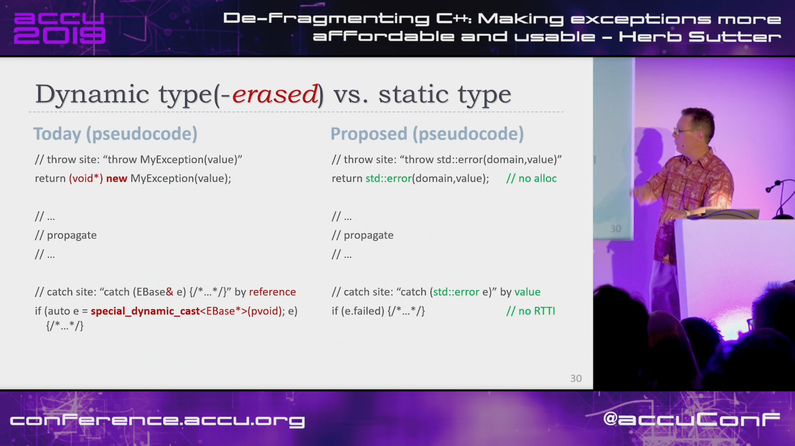
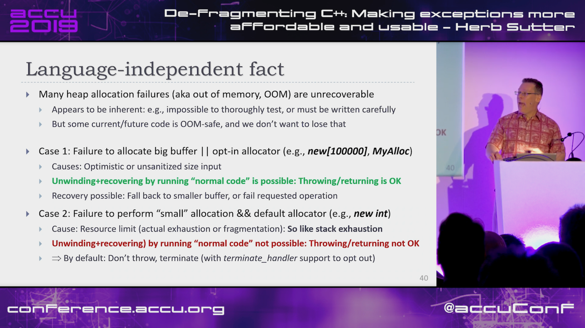

Second Annual C++ Foundation Developer Survey “Lite”
https://isocpp.org/blog/2019/04/second-annual-cpp-foundation-developer-survey-lite
https://www.surveymonkey.com/r/NCMCJDZ
Top 25 C++ API design mistakes and how to avoid them
https://www.acodersjourney.com/top-25-cplusplus-api-design-mistakes-and-how-to-avoid-them/
Book: Martin Reddy - API Design for C++
https://www.reddit.com/r/cpp/comments/bh5b75/top_25_c_api_design_mistakes_and_how_to_avoid_them/
Herb Sutter [ACCU 2019] De-fragmenting C++: Making exceptions more affordable and usable
https://www.youtube.com/watch?v=os7cqJ5qlzo
https://www.reddit.com/r/cpp/comments/bifsdx/herb_sutter_accu_2019_defragmenting_c_making/
Herb Sutter [ACCU 2019] De-fragmenting C++: Making exceptions more affordable and usable

Herb Sutter [ACCU 2019] De-fragmenting C++: Making exceptions more affordable and usable

Herb Sutter [ACCU 2019] De-fragmenting C++: Making exceptions more affordable and usable

Herb Sutter [ACCU 2019] De-fragmenting C++: Making exceptions more affordable and usable

Herb Sutter [ACCU 2019] De-fragmenting C++: Making exceptions more affordable and usable

Herb Sutter [ACCU 2019] De-fragmenting C++: Making exceptions more affordable and usable

Herb Sutter [ACCU 2019] De-fragmenting C++: Making exceptions more affordable and usable

Herb Sutter [ACCU 2019] De-fragmenting C++: Making exceptions more affordable and usable

Herb Sutter [ACCU 2019] De-fragmenting C++: Making exceptions more affordable and usable

Herb Sutter [ACCU 2019] De-fragmenting C++: Making exceptions more affordable and usable

Error Codes and Error Handling
https://www.randygaul.net/2019/04/26/error-codes-and-error-handling/
Error codes are better.
https://www.reddit.com/r/cpp/comments/bhysup/error_codes_and_error_handling/